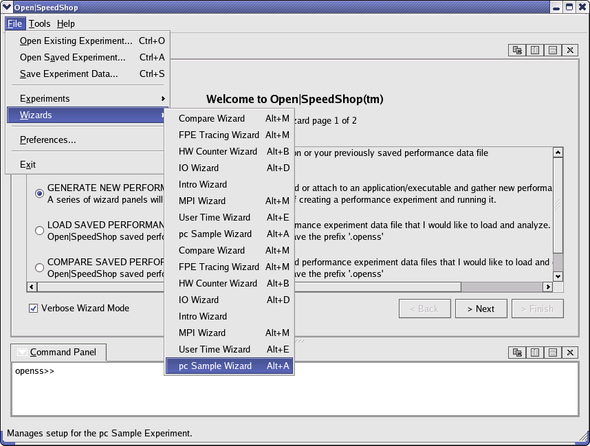
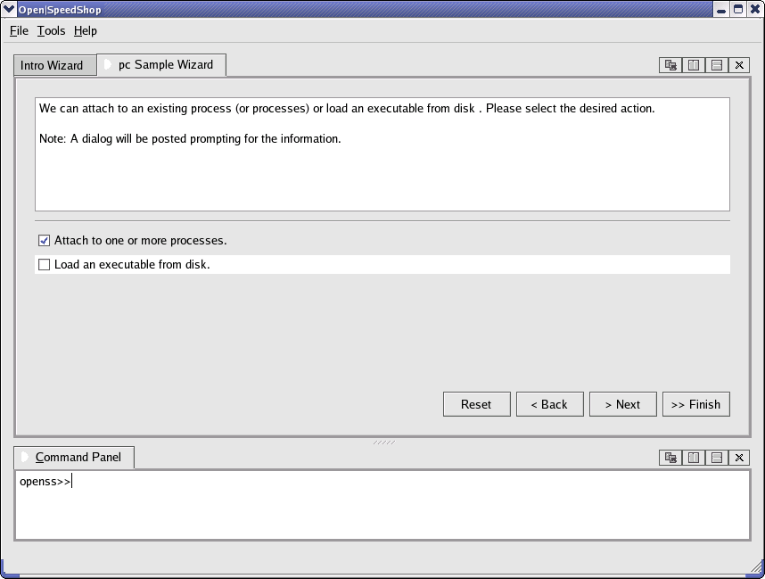
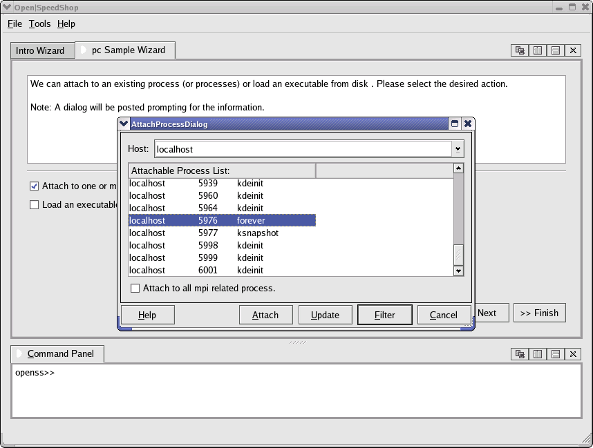
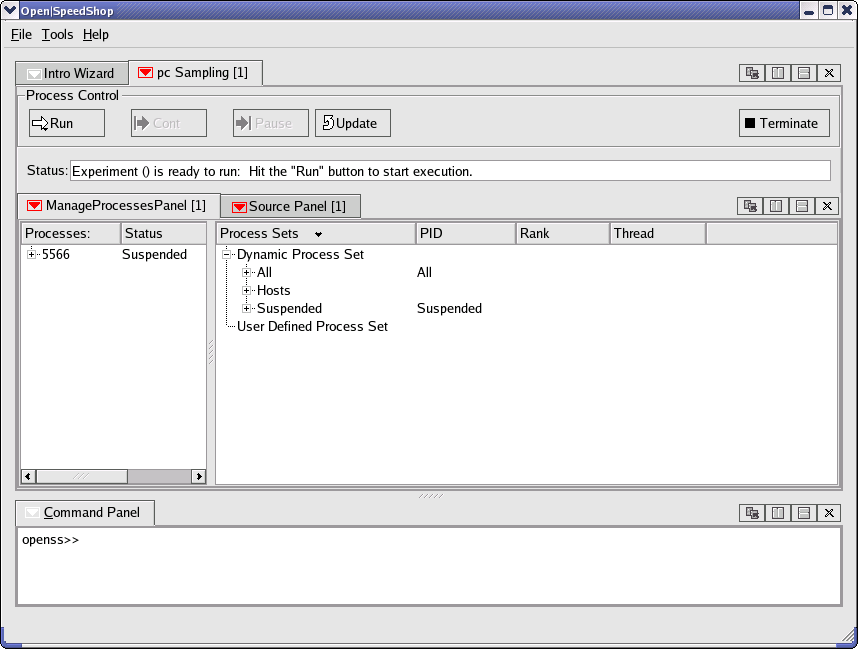
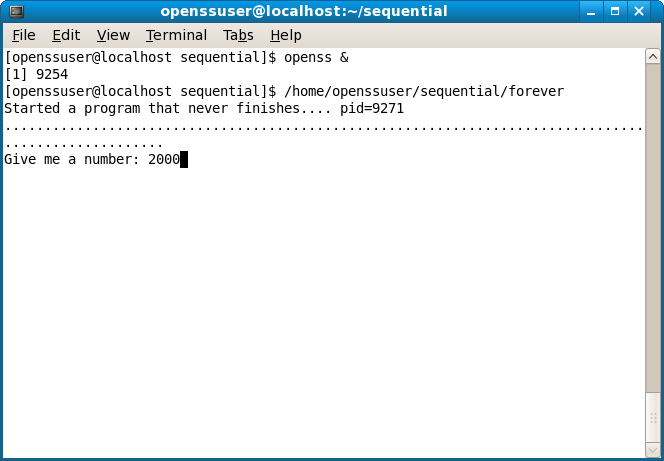
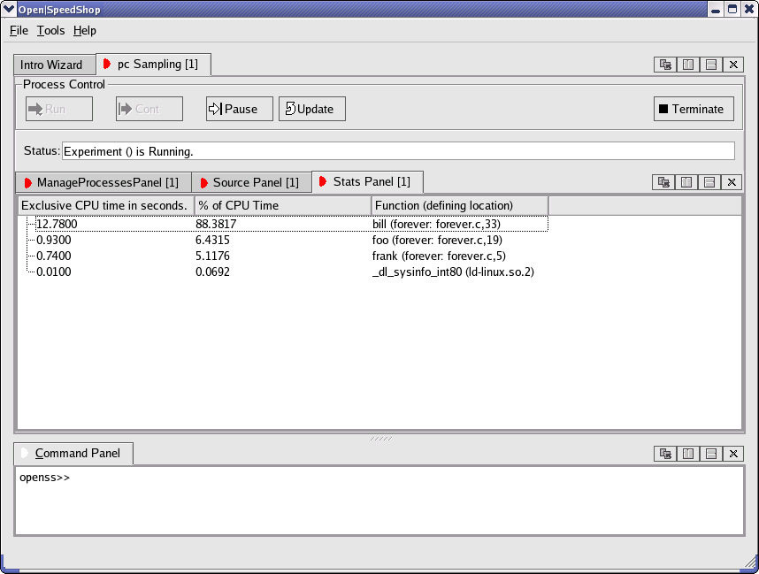

Using Open|SpeedShop™
Within a terminal, enter openss& and hit <Enter>. This will start Open|SpeedShop's graphical interface. We have provided a simple worker program which allows us to eaily demonstrate attaching to a running process (Note: The "forever" program was compiled with the option to produce debugging information). Now within the terminal window enter forever and hit <Enter>. This will start the worker program "forever." Note: If you experience difficulties, please try running the provided reset-live.sh script (~/reset-live.sh).
Within Open|SpeedShop's GUI, navigate to: File->Wizards->pcSample Wizard.
Click on the "Next" button. For this example, let's leave the default sampling rate value at 100 and click on the "Next" button. Now we want to click on "Attach to one or more processes."
Find "forever" within the list and select it.
Now that it is selected, click on "Attach." Click on the "Finish" button to complete the PC sampling experiment creation process. The PC sampling window should now appear (Note: This may take a moment.).
Now that the experiment is ready to run, let's click on the "Run" button to start the experiment.
Let's go back to the terminal window where we started the "forever" program. At this point, the program may be prompting for a number. Let's enter 2000, for example.
After the PC sampling experiment has had time to collect some data, we can view the collected data by expanding the process tree within the "ManageProcessPanel" and by double clicking on "localhost pcsamp." This will then take us to the stats panel, where we can view the collected data. (Note: If no collected data is visible, click on the "Update" button to refresh the stats panel.
Clicking the "Update" button will refresh the stats panel with an updated view of the collected data. As you can see, we are able to extract PC sampling data from the running process.
If we were curious about source/function call mapping, a simple double click on a given function will take us to the associated lines of code.
Once the "forever" program prompts for another value we can either terminate the running program by entering 0, or we can continue to collect more PC sampling data by entering a number greater than zero. For our purposes, let's terminate the running program. If we navigate back to the PC sampling window, we should now see an updated panel with all the PC sampling data collected during the data collection period.
| Back To Getting Started With Open|SpeedShop | Next Tutorial |